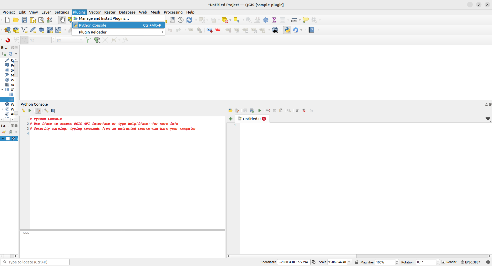

4. QGISin Python-konsoli
Harjoituksen sisältö: QGISin Python-konsoli ja skriptieditori.
Harjoituksen tavoite: Tutustua Python-komentojen ajamiseen konsolissa ja skriptien ajamiseen skriptieditorissa.
Seuraavissa harjoituksissa oletetaan, että tunnet Python-kielen perusteet. Tarvittaessa voit kerrata Pythonia täällä.
Yksinkertaisin tapa käyttää Python-rajapintaa QGISissä on Python-konsolin kautta. Konsolin avulla voidaan syöttää ja ajaa yksittäisiä komentoja tai pidempiä skriptejä. Windowsilla QGIS-asennukseen sisältyy erillinen Python-tulkki, jonka versio on 3.12. Lisäksi asennukseen sisältyy joitain Python-paketteja standardikirjaston lisäksi. Asennukseen kuuluu myös QGIS- ja gdal/ogr-kirjastot, jotka mahdollistavat eri komponenttien hyödyntämisen konsolissa ja lisäosissa. Näiden lisäksi asennukseen kuuluu myös PyQt-kirjasto, eli Qt-käyttöliittymäkirjaston Python-sidonta (binding), joka mahdollistaa graafisen käyttöliittymän luomisen lisäosille.
Python toimii käyttöjärjestelmien välillä hieman eri tavalla. Windows- ja MacOS-käyttöjärjestelmissä QGIS-asennukseen kuuluu oma Python-tulkki, kun taas Linux-pohjaisilla käyttöjärjestelmillä QGIS käyttää järjestelmän Python-tulkkia.
Python-konsoliin pääsee usealla tavalla (kts. alla oleva kuva):
- Sen voi avata QGISin ylävalikosta Lisäosat > Python-konsoli (Plugins > Python Console),
- Pikanäppäinyhdistelmällä Ctrl + Alt + P,
- Klikkaamalla työkalupalkista Python-logon kohdalta

Tarkastellaan konsoli-ikkunan eri osia: vihreästä kolmiosta klikkaamalla komennot suoritetaan (enter-näppäin ajaa saman asian). Muista ikoneista:
 Avaa skriptieditorin. Editori helpottaa pidempien skriptien tekoa ja ajamista
Avaa skriptieditorin. Editori helpottaa pidempien skriptien tekoa ja ajamista Tyhjentää konsoli-ikkunan edellisistä komennoista
Tyhjentää konsoli-ikkunan edellisistä komennoista Täältä löydät kätevästi linkit PyQGIs API -dokumentaatioon, PyQGIS Cookbookiin
sekä konsolin ohjeisiin.
Täältä löydät kätevästi linkit PyQGIs API -dokumentaatioon, PyQGIS Cookbookiin
sekä konsolin ohjeisiin.
Avaa konsolista skriptieditori ja tutki samoin sen ominaisuuksia.
Harjoitusten rakenne
Esimerkit
Eri harjoitusosioissa on annettu esimerkkejä Python-koodista. Suosittelemme, että esimerkkejä läpikäydessä kopioit esimerkin QGIS-konsolin skriptieditorin puolelle ja ajat koodin. Esimerkkien yhteydessä voi myös muokata koodia kokeillakseen eri toimintoja ja lopputuloksia. Esimerkit on annettu koodilaatikossa, josta sen sisällön voi kopioida viemällä hiiren osoittimen laatikon päälle ja klikkaamalla laatikon oikeaan yläreunaan ilmestyvää painiketta.
# Esimerkkikoodia
print("Run me as an example!")Harjoitukset
Suosittelemme, että työstät myös harjoitusten vastaukset skriptieditorissa. Harjoitusten yhteydessä on joskus annettu oikeaan suuntaan ohjaava vinkki, sekä aina malliratkaisu. Saat nämä näkyville painamalla Näytä ratkaisu ja Näytä vinkki -painikkeita. Suosittelemme kuitenkin, ettet katso malliratkaisua liian aikaisin vaan yrität ensin keksiä ratkaisun itse. Saman asian voi myös tehdä usealla tavalla, ja malliratkaisu on vain yksi tapa ratkaista ongelma!
Harjoitus 1.1
Aseta muuttujan a arvoksi 5 Python- konsolissa ja tulosta muuttujan arvo.
# Aseta ensin arvo
a = 5
# Millä funktiolla voit tulostaa muuttujan arvon?a = 5
print(5)
Lisävinkkejä konsolin käyttöön:
Konsoli sopii hyvin myös esimerkiksi PyQGIS-olioiden ominaisuuksien tutkimiseen sekä testailuun, ja se tukee esimerkiksi PyQGIS-kirjastojen koodintäydennystä (code completion).
Konsolissa voi myös suorittaa useammalle riville jatkuvia komentoja, kuten for-loopin. Konsoliin ilmestyy tällöin rivinvaihdon jälkeen kolme pistettä sen merkiksi, että se odottaa lisäkomentoja. Huomaa kuitenkin, että pisteet eivät vastaa Python-koodin sisennystä, vaan käyttäjän on huolehdittava tästä.
Nuolinäppäimillä ylös- ja alaspäin pääsee siirtymään konsoliin syötettyjen komentojen historiassa.
Konsolipaneeli aukeaa todennäköisesti karttaikkunan alapuolelle, mutta sen pystyy raahaamaan ja telakoimaan haluttaessa muuallekin QGISin käyttöliittymässä tai irrottamaan omaksi ikkunakseen.